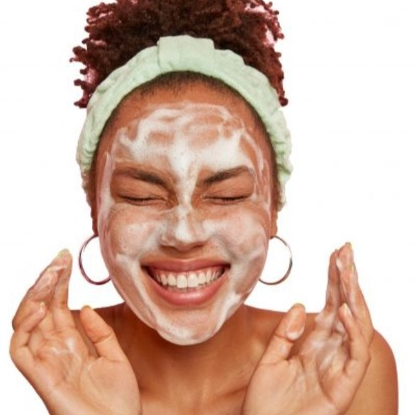

CLEANSER
Nearly any dermatologist and skin care professional will tell you that daily cleansing is essential for clear and healthy skin. It is typically recommended to wash your skin twice a day- once in the morning and once in the evening. Cleansing in the evening is fairly straightforward- you want to remove the buildup or natural oils on your skin, makeup you may have put on earlier in the day, and any dead skin cells. Morning cleansing is at times contested, with many questioning why you need to cleanse your skin in the morning if you had cleansed your face prior to going to bed. Morning cleansing removes any debris or dead skin cells that may have accumulated during the night after resting your face on the pillow. When picking a cleanser for your skin, be sure to choose a gentle formula that can be used daily. Oil or cream based cleansers tend to be the most hydrating.

MOISTURIZER
While all products in your skincare routine are equally important, a daily moisturizer is especially necessary in protecting your skin.When you are cleansing your skin, you are removing the buildup of oil and debris, which is great to purify skin. Daily cleansing does, however, remove a natural barrier and moisture from the skin. A moisturizer is necessary after cleansing to provide skin the moisture it needs to remain healthy, vibrant and youthful. Moisturizers also can help to keep underlying skin conditions at bay. If you experience redness, or other skin outbreaks, applying a daily moisturizer can help create a barrier to protect the skin from outside elements while also nurturing skin to prevent any flare ups. Moisturizer can be a little more tricky to pick out in a store because your skin might react better to certain formulas. Those with dry skin should consider oil-based moisturizer. If you tend to have skin that tends to be more oily, look for moisturizers that are water-based and contain ingredients like glycolic acid, which will help absorb some of the excess oil. Some moisturizers are also specially formulated for those with acne-prone skin. There’s truly something for everyone at every price point.
next page>>
>>previous page